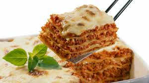

<html lang="en"></html>
<head>
    <meta charset="UTF-8">
    <meta name="viewport" content="width=device-width, initial-scale=1.0">
    <title>Pagina Web</title>
    <link rel="stylesheet" href="estilos2.css">
</head>
<body>
   

    <header>
    LASAÑA SIN GLUTEN
    </header>
    
       
   
        <h4>Ingredientes </h4>
   <nav>
    <li>700 g. de carne picada. Puede ser de res o cerdo</li>
    <li> 200 g. de vino tinto</li>
    <li> 1200 g. de tomate triturado </li>
    <li> 1 cebolla grande</li>
    <li>1 zanahoria grande o dos medianas</li>
    <li>1 rama de apio</li>
    <li>Aceite de oliva virgen extra</li>
    <li>Sal, perejil fresco y orégano</li>
    <li>Azúcar</li>
    <li>1 rama de romero</li>
    <li>Un poco de mantequilla</li>
    <li>Pan rallado sin gluten</li>
    <li>Un paquete de placas de lasaña sin gluten</li>
    <li>Ragú</li>
    <li>Dos bolas de mozzarella fresca</li>
   
</nav>
       
        <h5>Procedimiento para la salsa </h5>
     <ol>
        <li>Pelar y picar la cebolla muy pequeñita y rehogar en una olla
            grande con un poco de aceite de oliva virgen extra y un poco
            de sal a fuego lento hasta que quede transparente. </li>
        <li> Pelar y picar la zanahoria y el apio muy pequeñitos. </li>
        <li> Agregar la zanahoria y el apio a la cebolla y rehogar.</li>
        <il> Agregar la carne picada y rehogar hasta que se haga por
            completo.</li>
        <li>Cuando la carne esté hecha agregar el vino y mezclar bien.</li>
        <li>Cocinar a fuego bajo durante unos 3-5 minutos para que la
            carne y las verduras se empapen bien del vino.</li>
        <li>Añadir el tomate triturado y unificar todo.</li>
        <li>Agregar sal, el perejil picado y orégano al gusto, la rama de
            romero y unificar.</li>
        <li>Tapar la olla y dejar que se haga a fuego lento durante tres
            horas.</li>
        <li>Remover cada media hora para unificar y asegurar una cocción
            más uniforme.</li>
        <li>Una vez hayan transcurrido las tres horas, retirar del fuego y
            reservar.</li>
            

    </ol>

    <h6>Procedimiento para armar la lasaña</h6>
    <ol>
        <li> Picar la mozzarella en taquitos de un centímetro y medio
            aproximadamente.</li>
        <li> Untar un poco de mantequilla por todo el interior de la fuente y
            cubrir el fondo con una fina capa de pan rallado.</li>
        <li> Poner una capa de placas de lasaña.</li>
        <li> Cubrir la pasta con una capa de algo menos de un centímetro
            de grosor de ragú.</li>
        <li>Repartir los taquitos de mozzarella por encima dejando un par
            de centímetros de espacio entre cada taquito.</li>
        <li>Repetir los pasos 3 a 5 hasta haber llenado la fuente. En la
            capa superior no se pone mozzarella</li>
        

    </ol>
    <h3>
        
    </h3></body>
<footer> <h7> healtheeat</h7></footer>
